Haul it, paint it,store it – on theNorth East River.
A well-protected anchorage at the head of the Chesapeake with 137 slips, 32 sailboat moorings, a 50-ton travel lift and winter storage for up to 300 boats. Working the waterfront since 1928.
- Certified Maryland Clean Marina
- Gas, diesel & pump-out
- 24-hr security cameras

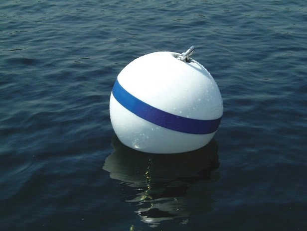
A full-service yard, from launch to lay-up
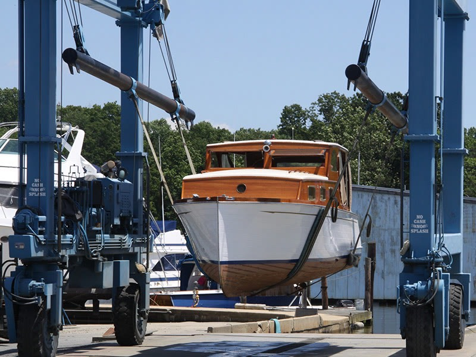
50-ton travel lift
Haul-outs for boats up to a 16 ft beam, plus mast stepping, prop and shaft work.

Bottom painting
Bottom painting and hull work in the yard – or do it yourself under Clean Marina rules.
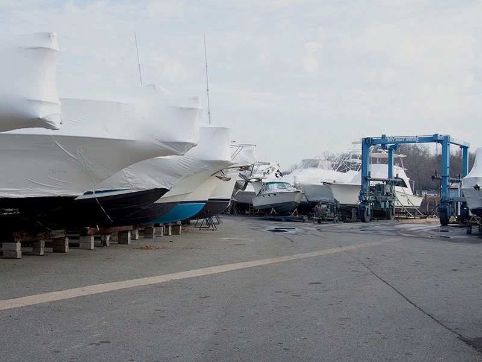
Winter storage
Wet or dry, indoor or outdoor, for up to 300 boats. Summer land storage with ramp access.

Slips & moorings
137 slips and 32 sailboat moorings with dinghy dock and rack, in a well-protected anchorage.

Gas, diesel & pump-out
Two 87 gas pumps, one diesel pump, two pump-out stations and a traveling pump-out boat.

Parts, ice & snacks
Marine products, ice, drinks and snacks – now with a walk-up window.
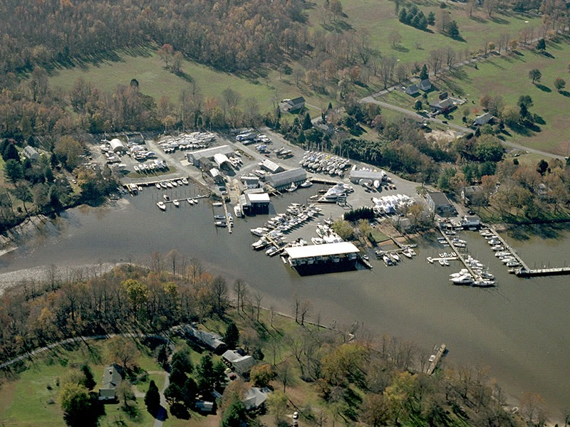
Aerial view – the mooring field is on the right.
Nearly a century on Hances Point
The yard sits on 31.7 acres, more than 20 of them undeveloped marsh, with outbuildings that span the marina's whole history.
The marina begins
Donald Green's grandfather starts the marina on the North East River.
Wartime carpentry
During World War II the yard's carpentry shop is used to build ammunition boxes.
The Clean Marina pledge
In January the yard signs Maryland's Clean Marina pledge.
First Clean Marina on the river
On April 29, Bay Boat Works becomes the 39th certified Clean Marina in Maryland – and the first on the North East River.
A new chapter
On March 18, ownership passes from Don & Mary Green to Kimberlee Lloyd, owner of Charlestown Manor Beach & Campground. The company now operates as Bay Boatworks, LLC, and Don Green stays on to help with the transition.
The first certified Clean Marina on the North East River
The certification means the yard meets the pollution prevention standards set by Maryland's Clean Marina Committee and the Department of Natural Resources. Day to day, that looks like this:
- We recycle waste oil, antifreeze, batteries, plastic, glass, aluminum, newspaper and cardboard
- Dustless sanders with vacs for half- or full-day rental in the store
- "No Spill" containers on the gas dock to keep fuel out of the river
- Oil absorb pads and booms on hand for small spills
- Two pump-out stations and a traveling pump-out boat
- Shrink-wrap recycling through the Marine Trades Association of Maryland program
Snapshots from Hances Point
Real photos from the yard, the docks and the river.
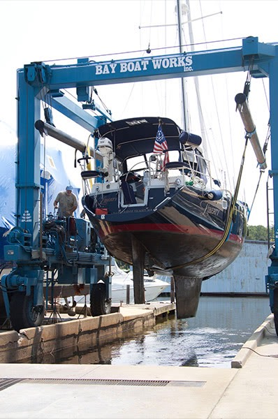
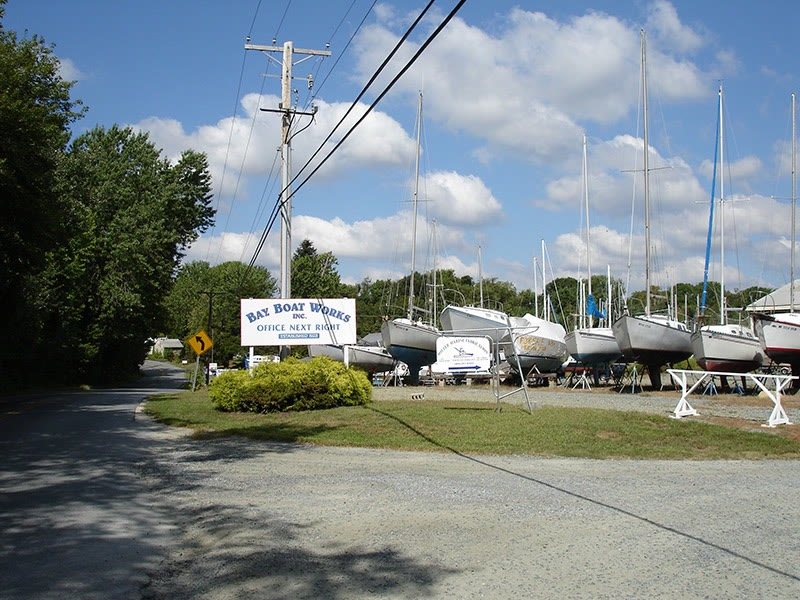

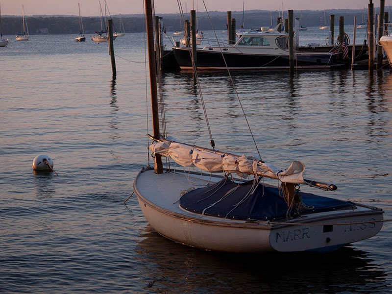
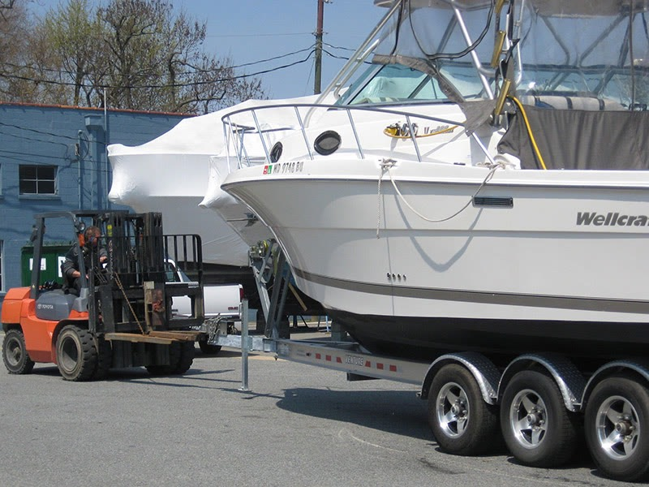
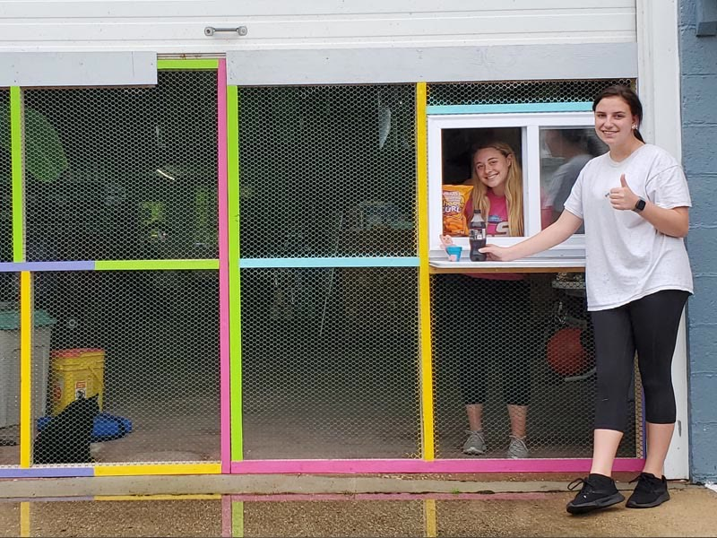
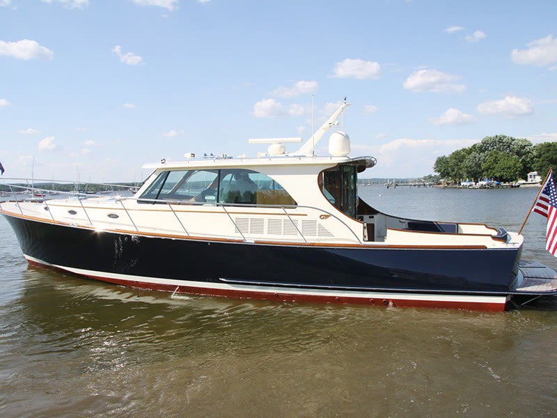
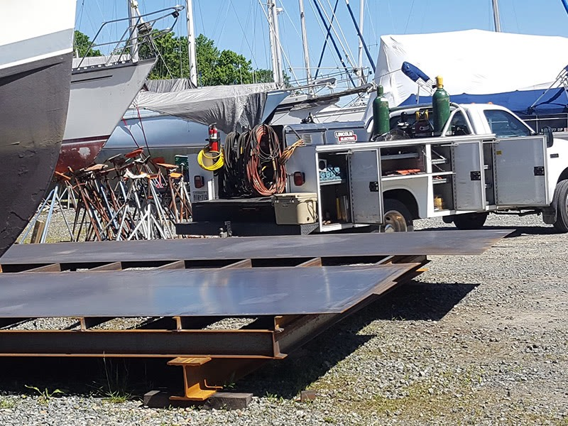
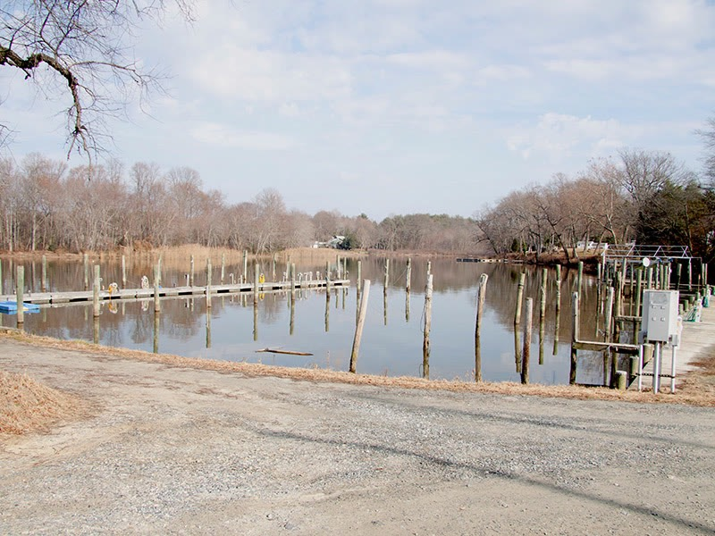
How big a boat can you haul?
Our travel lift is rated at 50 tons and takes boats with up to a 16 ft beam. Call the office at 410-287-8113 to schedule a haul-out.
Can I work on my own boat in the yard?
Yes. Do-it-yourself work is encouraged in the yard, with strict Clean Marina rules. Dustless sanders with vacuums can be rented for a half or full day in our store.
Which boats can use a mooring?
Moorings are for sailboats up to 37 ft and 5 ft 6 in draft (one mooring can handle a 38 ft sailboat). Power boats, steel sailboats and catamarans are not allowed on moorings. Moorings include use of the dinghy dock and/or dinghy rack, first come, first served.
Do you have winter storage?
Yes – wet and dry, indoor and outdoor, for up to 300 boats. Summer land storage with ramp access is available for trailered power boats 23 ft and under.
What does the fuel dock offer?
Two regular (87) gas pumps, one diesel pump and two pump-out stations, plus fuel additives, oil, stabilizers and holding tank products. We accept Visa, MasterCard, American Express and Discover. In summer the fuel dock closes at 4:15 PM.
Is there a pump-out service on the river?
Yes. Besides the two pump-out stations on the fuel dock, we run a traveling pump-out boat for the North East River area.
Office hours
Mon–Fri 8:00 AM – 4:30 PM| Monday – Friday | 8:00 AM – 4:30 PM |
| Saturday | 9:00 AM – 4:30 PM |
| Sunday | 10:00 AM – 4:30 PM |
| Fuel dock | closes 4:15 PM |
| Monday – Friday | 8:00 AM – 4:30 PM |
Who to email
- Kimberlee Lloydkimberlee@bayboatworks.com
- Lauren Channinglauren@bayboatworks.com
- Sheila McCann · mooringssheila@bayboatworks.com